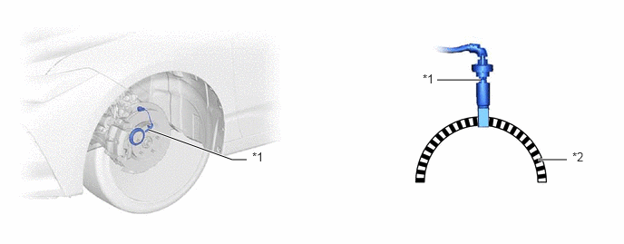
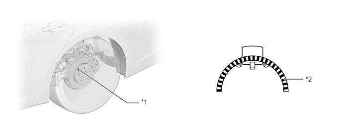
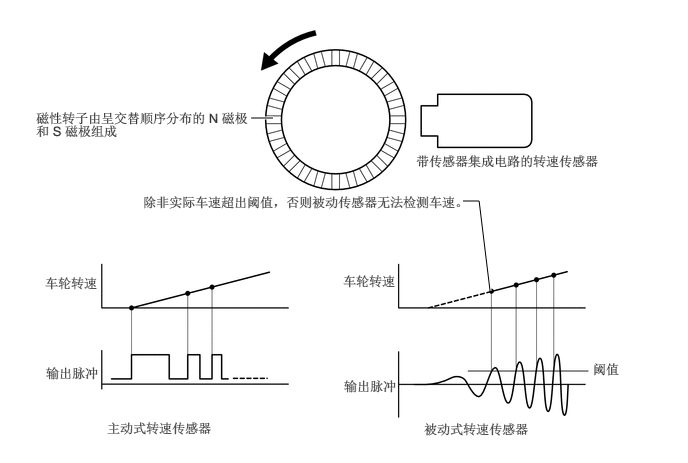

构造
采用可测量降至极低转速的主动式转速传感器。
前轮转速传感器安装在转向节上。前轮转速传感器采用了磁性转子，其由排列成圆形的 N、S 磁极构成。前轮转速传感器的转子安装在前桥轮毂和轴承总成的内座圈上。
集成于轮毂内的后轮转速传感器安装在后桥轮毂和轴承总成的外座圈边缘。后轮转速传感器采用了磁性转子，其由排列成圆形的 N、S 磁极构成。后轮转速传感器转子安装在后桥轮毂和轴承总成的内座圈上。

| *1 | 转速传感器 | *2 | 磁性转子 |

| *1 | 转速传感器 | *2 | 磁性转子 |
系统控制
磁性转子由 48 个围绕其圆周嵌入的铁氧体磁铁组成。
主动式转速传感器利用传感器集成电路检测传感器转子旋转时的磁场变化，并输出代表车轮转速的脉冲信号。
脉冲频率用于判定车速并可检测几乎降至 0 km/h 的车速。
